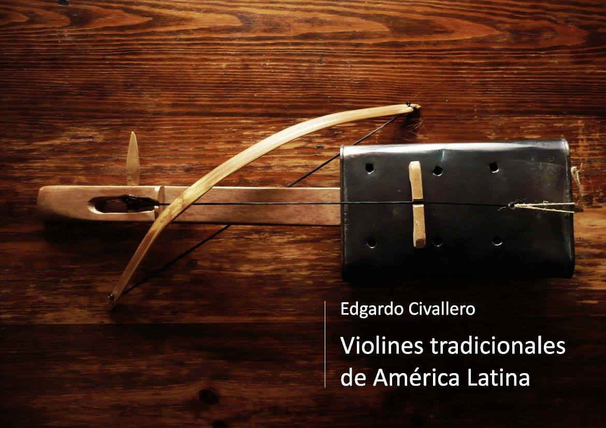

"Violines" tradicionales de América Latina. Parte 01: Argentina y Paraguay
Inicio > Libros digitales sobre música > "Violines" tradicionales de América Latina. Parte 01: Argentina y Paraguay
Cómo citar este trabajo: Civallero, Edgardo (2025). "Violines" tradicionales de América Latina. Parte 01: Argentina y Paraguay. Edición de archivo. Bogotá: El Zorro de Abajo Editora.
Descargar en PDF.
Este libro ofrece un recorrido por las múltiples variantes de instrumentos de cuerda frotada desarrolladas en el Cono Sur, tanto indígenas como criollas. La obra analiza los procesos de apropiación, reinvención y sincretismo que acompañaron la llegada de los violines, rabeles y vihuelas europeas a los territorios latinoamericanos desde el siglo XVI, y examina las formas locales que esos instrumentos adoptaron en contextos materiales y simbólicos profundamente distintos.
El texto parte de una premisa: el violín europeo fue reimaginado por las comunidades americanas, que adaptaron sus estructuras y técnicas a recursos propios y a concepciones sonoras particulares. Así surgieron cordófonos que, aunque mantienen la esencia del arco frotado, presentan una diversidad de formas, materiales y afinaciones que los convierten en objetos culturales únicos. Se distinguen dos grandes tradiciones: las indígenas, que reinterpretaron el modelo europeo desde sus propios sistemas acústicos y cosmológicos, y las criollas, que lo integraron al repertorio rural y popular.
El primer caso analizado es el nwiké (o mbiké, ñoviqué, newiké), un rabel monocorde empleado por los pueblos Qom y Pi'laqá del noreste argentino. Construido antiguamente con calabazas o palmas ahuecadas y cuerdas de tripa o crin, el instrumento fue transformándose hasta adquirir una caja de resonancia hecha con latas metálicas recicladas, un mástil de palo borracho, una cuerda de crin o alambre y un arco de madera con fibras plásticas o animales. La ejecución se realiza apoyando el instrumento en el pecho y rozando la cuerda con los dedos, más que pisándola, lo que produce un sonido vibrante y nasal. Posee una doble función: instrumento de entretenimiento personal y medio ritual de acompañamiento a los pioxonaq (chamanes) Qom y Pi'laqá. La obra incluye la leyenda de La'axaraxaik, mito fundacional del instrumento, en el que el sonido del nwiké actúa como mediador entre el amor, la naturaleza y el destino. En la actualidad, el instrumento ha sido resignificado como símbolo identitario del pueblo Qom y ha ingresado a repertorios colectivos como el del coro Chela'alapi, que lo incorpora en arreglos corales y percusivos.
El segundo instrumento tratado es el rabé o ravé de los Mbyá-Guaraní, un cordófono de tres cuerdas con caja de resonancia tallada en madera de cedro misionero y componentes de maderas duras locales. Sus cuerdas, de tripa, cabello o nylon, se afinan en acordes mayores invertidos y su función combina el acompañamiento de cantos rituales (jae'o) y danzas ceremoniales en el op'y o casa sagrada. Se trata de una herencia jesuítica reinterpretada por los Mbyá, que dotaron al instrumento de carácter sagrado y lo asocian con la identidad del cedro, árbol considerado mediador entre planos espirituales. El rabé participa en las danzas del tangara y en celebraciones que vinculan música, cuerpo y espiritualidad.
El tercer ejemplo es el turúmi o miori, adoptado por los Ava y los Chané del Chaco salteño y boliviano. De estructura similar a una viola europea, con cuatro cuerdas afinadas en quintas, el instrumento presenta un diseño más rústico, tallado en una sola pieza de cedro y cubierto con una tapa pegada con resinas vegetales. Su ejecución, sobre el pecho, evita presionar las cuerdas, que se rozan con los dedos. Su introducción está asociada a la influencia franciscana y su uso está documentado durante celebraciones sincréticas como el Arete guasu o carnaval, las pascuas y los cantos areruya, en los que el violín se convierte en vehículo de expresión catártica.
El texto examina luego los violines criollos argentinos, construidos por luthiers campesinos en el norte y centro del país. Fabricados con maderas autóctonas como algarrobo o mistol, estos violines se interpretan con estilos locales alejados de la técnica académica. Se destaca el llamado "violín hechizo" del Chaco salteño, empleado en géneros como la chacarera, la zamba o el gato, ejemplo de cómo la cultura rural absorbió y resignificó el instrumento europeo, transformándolo en parte esencial de su paisaje sonoro.
El recorrido concluye con los rabeles del Paraguay, como el hathpang o hat'pong, usado por los Maká, Enxet y Enlhet. Estos cordófonos monocordes, con cajas de palma ahuecada, tapas de cuero y cuerdas de crin, mantienen el principio organológico de los antiguos rabeles europeos, pero incorporan prácticas locales, como el uso de saliva en lugar de resina para frotar el arco. Su presencia entre los pueblos chaqueños paraguayos confirma la amplia difusión del modelo frotado en la región y su adaptación a entornos materiales mínimos.
A través de estas descripciones, el texto no solo traza una genealogía del violín y sus derivados en el sur de América, sino que analiza los procesos de apropiación cultural, resistencia y creación estética que los acompañan. Cada instrumento refleja una forma de entender el sonido como parte de la vida social: el nwiké como voz del bosque y del amor; el rabé como mediador sagrado; el <>turúmi como eco de las misiones; los violines criollos como emblemas de identidad campesina; y los rabeles paraguayos como vestigios vivos de la adaptación indígena.
La cuerda frotada —introducida por la colonización europea— fue resignificada en cada contexto hasta volverse profundamente americana: una herramienta de memoria, resistencia y belleza sonora que narra, en cada vibración, la historia mestiza del continente.